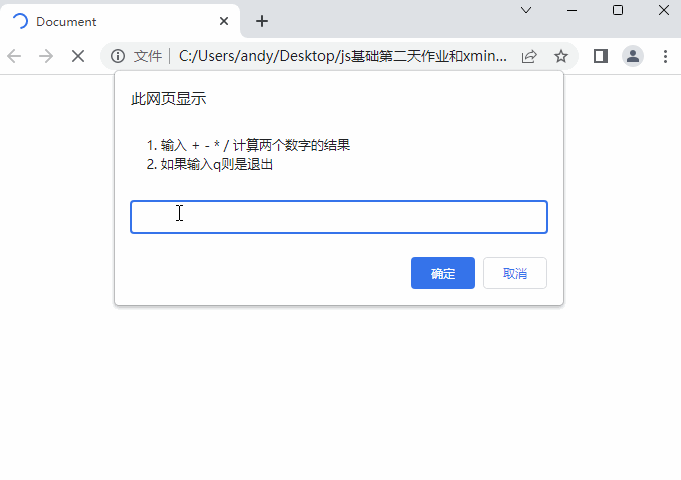

<!DOCTYPE html>
<html lang="en">
<head>
    <meta charset="UTF-8">
    <title>Title</title>
</head>
<body>

<script>
    // 1. 打印0-20之间的整数, 将每个数输出到控制台
    // for (let i = 0; i <= 20; i++) {
    //     console.log(i);
    // }

    // 2. 计算1-1000之间的累加和，并且打印输出到页面中
    // let sum = 0
    // for (let i = 1; i <= 1000; i++) {
    //     sum += i
    // }
    // console.log(sum)

    // 3. 页面依次打印 100-200之间,可以被6整除的数字
    // for (let i = 100; i <= 200; i++) {
    //     if (i % 6 === 0) {
    //         console.log(i);
    //     }
    // }

    // 4. 用户弹窗输入两个数字，页面输出两个数字中的最大值（请使用三元运算符完成）
    // let num1 = +prompt('请输入第一个数')
    // let num2 = +prompt('请输入第二个数')
    // let max = num1 > num2 ? num1 : num2
    // console.log(max);

    //  5. **用户输入一个数，  计算 1 到这个数的累加和**
    //  - 比如 用户输入的是 5， 则计算 1~5 之间的累加和
    //  - 比如用户输入的是10， 则计算 1~10 之间的累加和
    // let num = +prompt('请输入一个数')
    // let sum = 0
    // for (let i = 1; i <= num; i++) {
    //     sum += i
    // }
    // console.log(sum);

    //  6. **输出成绩案例（请使用if多分支来书写程序）**
    //  题目描述：
    // 接收用户输入的分数，根据分数输出对应的等级字母 A、B、C、D、E，
    // - 90分(含)以上 ，输出：A
    //  80分(含)~ 90 分(不含)，输出：B
    //  70分(含)~ 80 分(不含)，输出：C
    //  60分(含)~ 70 分(不含)，输出：D
    //  - 60分(不含) 以下，输出 E
    // let score = +prompt('')
    // if (score >= 90) {
    //     console.log('A');
    // } else if (score >= 80) {
    //     console.log('B');
    // } else if (score >= 70) {
    //     console.log('C');
    // } else if (score >= 60) {
    //     console.log('D');
    // } else {
    //     console.log('E');
    // }

    //  7. **输出星期练习（请使用switch分支语句来书写程序）**
    //  题目描述：
    // 请用户输入1个星期数. 就将对应的英文的星期打印出来.
    // - 比如用户输入'星期一'， 则 页面可以打印  monday
    //  - 英文自己查有道。比如星期一是  monday  星期二是 tuesday
    // let day = prompt('')
    // switch (day) {
    //     case '1':
    //         console.log('星期一');
    //         break
    //     case '2':
    //         console.log('星期二');
    //         break
    //     case '3':
    //         console.log('星期三');
    //         break
    //     case '4':
    //         console.log('星期四');
    //         break
    //     case '5':
    //         console.log('星期五');
    //         break
    //     case '6':
    //         console.log('星期六');
    //         break
    //     case '7':
    //         console.log('星期日');
    //         break
    // }

    //  8. **用户登录验证**
    //  题目描述：
    // 接收用户输入的用户名和密码，若用户名为 “admin” ,且密码为 “123456” ,则提示用户登录成功!  否则，让用户一直输入。
    // while(true) {
    //     let username = prompt('请输入用户名')
    //     let password = prompt('请输入密码')
    //     if (username === 'admin' && password === '123456') {
    //         alert('用户登录成功!')
    //         break
    //     }
    // }

    // ### 综合案例变形
    // 需求：根据用户选择计算两个数的结果：
    // **题目描述：**
    // 打开页面出现一个提示框，注意是一直提示的，'请您选择 + - * / ，如果输入q，则是退出结束程序
    // - 如果输入的是 + - * / 其中任何一个，比如用户输入是 + ，则是计算求和，如果用户输入是 *  则是计算乘积
    // - 则提示第一个弹窗，提示用户：'请您输入第一个数字'
    // - 输入完毕则继续提示第二个弹窗，提示用户：'请您输入第二个数字'
    // - 都输入完毕，则通过警示框 alert 输出结果
    // - 如果输入是 q，则结束程序
    // 提示：多分支请使用 if 多分支来完成
    //     具体效果如图：
    // 
    // while (true) {
    //     let re = prompt(`
    //   1. 输入 + - * / 计算两个数字的结果
    //   2. 如果是q则是退出
    // `)
    //     if (re === 'q') {
    //         break
    //     } else {
    //         let x = +prompt('请输入第一个数字')
    //         let y = +prompt('请输入第二个数字')
    //         if (re === '+') {
    //             alert(`两个数的和是: ${x + y}`)
    //         } if (re === '-') {
    //             alert(`两个数的差是: ${x - y}`)
    //         } if (re === '*') {
    //             alert(`两个数的乘积是: ${x * y}`)
    //         } if (re === '/') {
    //             alert(`两个数的求商是: ${x / y}`)
    //         }
    //     }
    // }

</script>

</body>
</html>